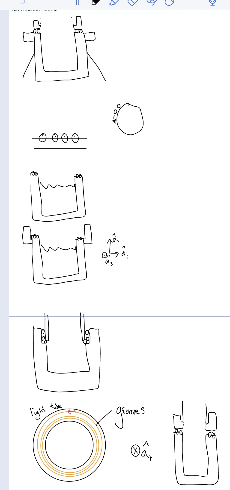
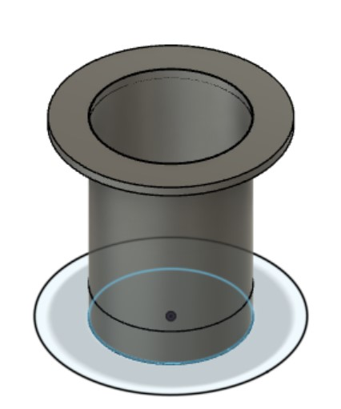
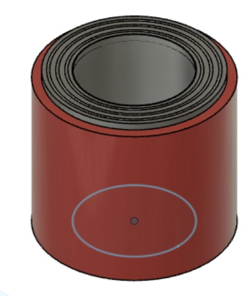

## Week 9
### Monday-Nov 7
On this Monday, we finally separated into our final project groups of this semester to work on the different components of our final prototype. I am on one of the teams specializing on the lower part of the solar tracking dish, working with Christine on the azimuthal angle. This is the angle dealing with the circular rotation of the plane parallel to the ground. We spent most of class discussing and ideating about the best way to connect the drum to remain stationary as the light pipe and other components rotate relative to the drum. Nathan talked to us about using caster wheels or possibly bearings as a means of creating this rotating motion, and ultimately, I thought a lot about some sort of groove-based design such that caster wheels ride along the grooves. I have a picture below showcasing my ideas throughout this ideation process.

### Wednesday-Nov 9
This Wednesday I talked to Nathan a bit more about the design of the top portion of the drum that I believe would be an interesting avenue to explore with the groove design, and continuing on those thoughts from Monday, we transitioned into CAD modelling rather than sticking to drawing sketches out. I have a screenshot of the modelling that I did for the drum below.

